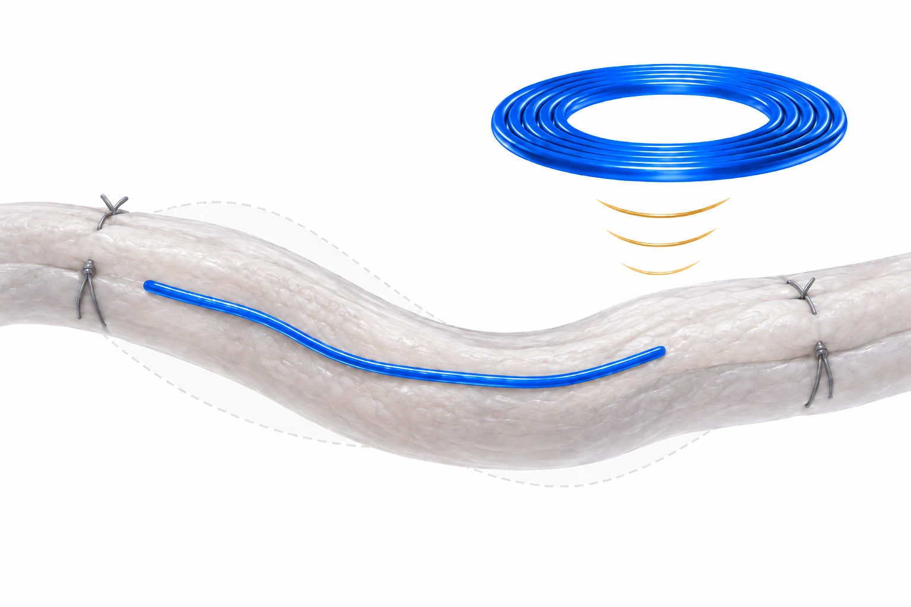

Overview
This study, by researchers at DGIST, Korea University College of Medicine and the BLISS Lab (Jungmok Seo) at Yonsei University, presents a wireless, chip-less and immune-tolerant strain-sensing suture for following the stiffness of a reconstructed Achilles tendon (AT) during healing. The capacitive fiber sensor showed a sensitivity of about 6.2 (15.1 pF in revised units), and in one micropig the measured tendon strain under the same 41° leg bending fell to 5.83% at 10 weeks, compared with 4.38% in the normal tendon.
Background
After AT rupture and repair, tendon stiffness increases during healing at rates that differ between individuals, which makes it difficult to set rehabilitation loads. Magnetic resonance imaging, sonography and computed tomography measure tendon mechanics only indirectly and are not suited to continuous use. Planar implantable strain sensors are structurally mismatched to fibrous tissue and are difficult to fix in a wet, moving environment, and an earlier suture-type fiber sensor (Lee et al., Nature Electronics 2021) used silver nanoparticle (AgNP) electrodes, which reduced cell viability.
Design and approach
Gold nanoparticles (AuNPs) were reduced in situ inside a polyurethane-based elastomeric fiber to form a biocompatible fiber electrode. Two such electrodes are wound helically around a hollow core; under tension the helix tightens, the core narrows and the capacitance between the electrodes rises. The same electrodes are extended into a double-layered inductive coil, forming a passive resistor-inductor-capacitor (RLC) circuit whose resonant frequency is read through an external coil without integrated circuit chips. The sensor is built on a standard medical suture with a conical needle tip, and the whole system is coated with a fluorinated self-assembled monolayer (F-SAM) infused with perfluoropolyether lubricant to resist protein adhesion and reduce friction.

AI-generated concept, not to scale: the blue sensing region follows tissue deformation, an external coil represents readout, and gray sutures represent separate mechanical support. The electrical circuit, implanted resonant assembly and wiring are omitted. This is not a complete architecture or evidence that the fiber alone communicates wirelessly.
Generated for this library to illustrate the design; it is not a figure from the paper and does not show measured data.
How it was evaluated
The electrode and sensor were characterized for resistance, capacitive response, hysteresis at several stretching rates and cyclic durability, and cytocompatibility was compared with NIH3T3 fibroblasts. Wireless readout was tested under coil separation, angle and misalignment, with intervening media and after immersion in phosphate-buffered saline (PBS). The coating was evaluated by sliding angle, albumin adsorption, extraction friction through porcine tissue and cell viability. In vivo, an AT rupture was created and repaired in one 30 kg female micropig (n = 1); sensors were sutured along the normal and reconstructed tendons, the coil was placed under the skin, and strain under 41° leg bending was recorded over 10 weeks and converted to relative stiffness with a multispring model.
Key results
Repeated in situ reduction lowered the electrode resistance to 0.48 Ω/cm. The sensor with 3 turns per centimeter and a 500 μm hollow core showed a sensitivity of about 6.2 (about 15.1 pF in revised units) between 10 and 20% strain, resolved a 0.1% strain at 10% prestrain, and kept working beyond about 20% strain with a sensitivity of about 3.7. Hysteresis was negligible at 0.1, 0.2 and 0.5 mm/s. The paper gives different cycle numbers for durability: 10,000 cycles at 10% strain for the electrode in the text (5000 in the Fig. 1G legend), and 5000 cycles at 10% strain for the sensor in the Results (over 10,000 cycles in the Abstract). NIH3T3 cells grown with the AuNP electrode and sensor showed minimal cell death, unlike the AgNP electrode of that earlier sensor.
The resonant frequency shifted downward as strain increased from 0 to 40%. A clear resonance was retained at coil separations up to 8 mm, angles up to 40° and center misalignment up to 10 mm, and artificial skin, ethanol, water, pH 5 buffer and PBS between the coils caused no noticeable peak shift. Full immersion in PBS shifted the resonance from 43.1 to 32 MHz, after which it stabilized.
On the lubricated surface, liquids rolled off at inclinations below 8°, albumin covered 1.01% of the area compared with 24.46% on bare surfaces, and extraction friction through porcine tissue fell by 71.6%, from 50.1 to 14.2 mN. Most cells remained alive next to both bare and lubricated sensors.
In the micropig, the normal AT showed about 4.38% strain under 41° leg bending. The reconstructed AT showed no meaningful response for the first 2 weeks, which the authors attributed to tight surgical suturing, and a stable response from week 4, when the medical sutures had dissolved. During weeks 4 and 5 the response and calculated strain were substantially larger than in the normal AT (reported as 27.11 and 13.3%), and by week 10 the strain had decreased to 5.83%. The multispring model estimated that stiffness rose to about 75% of that of the normal tendon. Histology and hematology showed no tissue damage or implantation-related inflammation over 10 weeks, and the sensors remained in place without displacement.
Open questions
Because the sensor's Young's modulus (1.04 MPa) is far below that of medical sutures (0.2 to 9.3 GPa), it does not provide mechanical support for the repair and is sutured alongside the tissue. The authors identified the need for a second operation to remove the implanted sensor as a limitation for clinical use and proposed a bioresorbable version.
Related research
Wirelessly operated bioelectronic sutures for the monitoring of deep surgical wounds
DOI: 10.1038/s41551-021-00802-0 ↗
Kalidasan and colleagues used conductive-polymer sutures with capacitive pledget sensors read by radiofrequency identification to monitor deep surgical sites in pigs. This study instead reads tendon strain through a helical fiber capacitor and coil resonance.
Abstract-based introductionRESEARCH NEWS
Research in the news
Sources used in this summary
This summary is based on the main text, figure legends, Conclusions and Experimental Section of the published version of record (ACS Nano, 15-page PDF, local copy downloaded through Yonsei University). The Supporting Information, including the analytical models for strain and stiffness and Figures S1–S24, and Movies S1–S2 were not reviewed; values attributed to supporting figures are those stated in the main text.